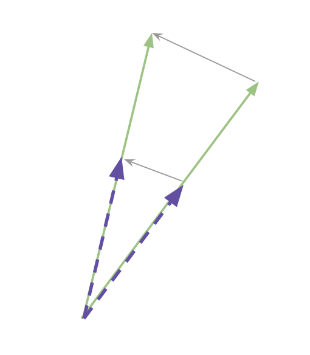
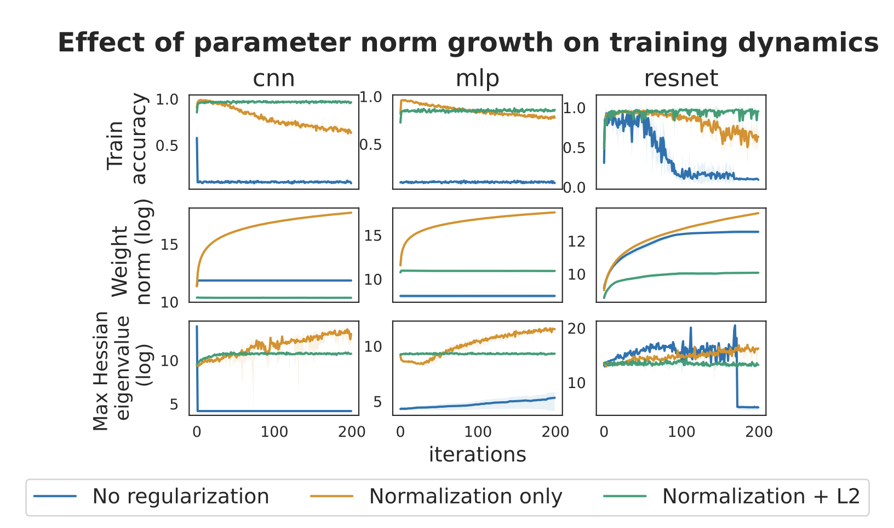

A brief clarification
The problem with writing a paper is that, once you put it out into the world, it takes on a life of its own. People can then draw whatever inferences they like from it, whether or not those were the ones you intended when you wrote it.
Nowhere has this been clearer than in the papers I’ve written on plasticity loss. My understanding of why neural networks become harder to train over time has evolved a lot over the past four years, and the careful observer will see this evolution in the papers I have written. In my initial papers, I tracked a lot of correlations, e.g. between network performance at the end of a continual learning problem and parameter norm or dead units or gradient norm. I wasn’t necessarily sure what the causal relationship between these things was, but it seemed worthwhile to log whatever correlations might exist. Later papers were able to clarify exactly why some of these correlations existed, and why they weren’t consistent accross certain algorithm or task properties.
Unfortunately, when you write a paper clarifying an observation you made in an earlier paper, it is not considered good scientific practice to add a footnote in your earlier paper noting the ambiguous or incorrect observation and pointing to the later paper that clarifies or corrects it. This means that a lot of people who read the early paper might have no idea that the later paper exists, and go on believing something that, when you looked deeper, turned out to just be a spurious correlation.
This has unfortunately become the case with parameter norm and loss of plasticity, and I’m writing this blog post in a possibly-futile effort to correct it. In particular, I want to refute the following misconception:
Neural networks lose plasticity because their parameter norm gets large, so if you find a method that doesn’t cause parameter norms to grow too much then that will help maintain plasticity through some complex, as-yet-unknown mechanism.
My clarification is going to stand on two pillars: first, I will explain why parameter norm doesn’t cause loss of plasticity. Then, I will explain why it does.
Consider a “standard” feedforward ReLU network from the year 2018, back before softmax attention took off. This network would typically be composed of a few main ingredients: convolutional layers, fully-connected layers, batch or layer normalization, ReLU nonlinearities, skip connections, and maybe a softmax transform at the end to convert logits into a normalized probability distribution. In this case, the network will be viewed as a sequence of linear-homogeneous functions followed by normalization transforms. Such a network is partially scale-invariant, which means that multiplying the parameters by a constant (for any set of parameters that precedes a normalization layer) won’t change the network output. Scale-invariant networks have a lot of nice properties, one of which is that there exist equivalence classes of parameter-norm-learning-rate pairs which induce the same training dynamics. The mathematics behind this are actually quite cute. Essentially, given a function such that
\[f(x) = f(\alpha x) \forall \alpha > 0\]
we have the following property of the gradient
\[\nabla f(\alpha x) = \frac{1}{\alpha} f(x) \]
which is straightforward to deduce from the definition of a derivative
\[\nabla f(x) = \lim_{h \rightarrow 0} \frac{f(x + h) - f(x)}{h} = \lim_{h \rightarrow 0} \alpha \frac{f(\alpha x + \alpha h) - f(\alpha x)}{\alpha h} = \alpha \nabla f(\alpha x)\]

This means that if we follow gradient descent from parameters \(\theta\) with learning rate \(\eta\) the updated function \(f(\theta + \eta \nabla \ell(\theta))\) is the same as an update to the scaled parameters \(\alpha \theta\) updated with learning rate \(\alpha^2 \eta\). It’s easy to picture this relationship between scale and learning rate in your head if you imagine trying to rotate the minute vs the hour hand around a clock face. The minute hand is a lot longer than the hour hand, and so you have to move it further achieve the same change in angle.
The training dynamics of a neural network are much more complicated than rotating the minute and hour hands of a clock. However, with respect to parameter norm, the clock isn’t such a bad analogy. If you have a neural network that frequently normalizes features as they propagate through layers, the norm of the weight matrix preceding this normalization won’t matter for the network output, since it will be immediately rescaled anyway. What matters instead is the direction of the features after the weight matrix has been applied.
In a scale-invariant network, training dynamics depend on the effective learning rate. Provided that a suitable ELR is maintained, the network’s training dynamics will be independent of the parameter norm. So although an obscenely large parameter norm will result in a vanishing effective learning rate and thus slower learning (imagine trying to move the minute hand on Big Ben by dropping grapes on it), “reasonable” parameter norm growth should have the same effect on plasticity as a slight reduction in the learning rate.
In networks which aren’t scale-invariant, the picture is a bit murkier as now an excessively large parameter norm can directly cause pathologies in the network, for example saturated nonlinearities or divergent gradient norms. While these phenomena certainly can and do occur when parameters are too large, the causal relationship between trainability and parameter norm is more subtle than might be initially expected, as the following examples illustrate.
Example 1: gradient norm spikes, network takes steps whose size is much larger than the local loss landscape sharpness can accommodate, and a period of instability emerges during which the parameter norm increases. The result will be a sudden jump in the parameter norm due to the period where the gradients were large, coupled with a potential loss in plasticity particularly if the network saturated a large fraction of its nonlinear activations in the process. This will result in the parameter norm and plasticity correlating, but not as a result of a direct causal relationship – instead, both are downstream consequences of deeper optimization problems.
Example 2: a transformer is trained beyond the interpolation threshold on a classification task, and to maximize the log likelihood of the correct class, learns to saturate all softmax transformations in the network; while this is happening, the parameter norm slowly grows. Additional data is added later, but the network is slow to respond to the learning signal provided by the new data as it requires learning new attention patterns.
In example 1, plasticity loss is caused by a chaotic phase of training dynamics which also cause parameter norm growth. In example 2, parameter norm growth might be responsible for plasticity loss if it is the reason for the saturated softmax, but it might also only play a supporting role in the unfolding dynamics, with the majority of saturation due to increases in the norm of the LN scale parameters or due to increased alignment of pre-softmax weights with the incoming features. In practice I’ve tended to observe that the last option is most common, and that while parameter norm does tend to increase alongside feature norm, alignment between features and weights tends to account for the bulk of the growth in feature norm.
In short, the causal story tends to be that something about the network training dynamics, which is some combination of transient chaotic phases of training combined with more pervasive, subtle biases that lead to poor conditioning and over-saturated nonlinearities, is a root causal node which can induce both increases in the parameter norm and reduced trainability. Although parameter norm growth presents a strong correlational relationship with plasticity loss, this is mostly because the types of dynamics which lead to plasticity loss also tend to result in greater parameter norm growth.
This doesn’t fully explain why so many regularization methods that reduce growth in the parameter norm also reduce plasticity loss. It’s reasonable to question whether there really is no (or at least a very weak) causal arrow between parameter norm and plasticity when empirically so many interventions that reduce the former also improve the latter. This is a reasonable point, but mostly wrong. And because the way that it is wrong is quite subtle, I think the perceived strength of the correlation in th eliterature is much greater than it actually is.
In an unregularized network, parameter norm growth is a natural consequence of learning. Even if we were applying completely random updates to the network, we would expect its parameter norm to grow at a roughly \(\sqrt{t}\) rate. If the underlying learning dynamics will tend to drive the network into a less plastic regime (e.g. due to excessive simplicity bias or unit saturation), then doing anything that slows down this process will make plasticity loss look better. Reducing the learning rate? Less plasticity loss. Reducing the number of steps? Less plasticity loss. These interventions will also reduce how much the parameter norm can grow for obvious reasons. However, they’re not reducing loss of plasticity because they limit parameter norm growth; parameter norm growth is a consequence of a more fundamental causal node that is being acted on.
It’s common for siblings in a causal graph to correlate. However, this correlation is also vulnerable to Goodhart’s law. Setting a weight decay factor of 10000 will certainly prevent parameter norm growth, but at the cost of ever learning.
My commentary above requires a caveat. While in normal conditions the thing that is making your network untrainable is unlikely to be the magnitude of its parameters, weight norm can drive loss of plasticity in extreme cases. For example, if you let a neural network run unregularized for millions of steps on a highly non-stationary learning problem with lots of gradient spikes, you can reach a point where your model fails to be trainable because the parameter norm has become obscenely large. While the precise meaning of “obscenely large” varies between problem settings and architectures, increasing by, say, 6 orders of magnitude is usually sufficient to cause optimization problems in a neural network, as we can see in the following plot.

Notice that the orange lines, which correspond to an unregularized network trained on a sequence of image classification tasks, exhibit enormous parameter norm growth that eventually leads to a drop-off in average performance. Figure from this paper.
Further, if parameter norm is too large at initialization, when gradients are quite large relative to the parameters, this can also lead to instabilities and failure to train. Parameter norms at initialization require careful calibration to make sure learning is balanced, stable, and nontrivial. So it’s definitely the case that starting out training with a large parameter norm can become problematic. Similarly, many signal propagation properties, e.g. rotational equilibrium and dynamic isometry, need to be introduced in the network prior to initialization in order to ensure it is sufficiently well-behaved. So although increasing parameter norm isn’t typically a causal factor in loss of plasticity, if you use a very ill-conceived initialization scheme you can certainly end up in a situation where the parameter norm is the reason why you can’t train your network.
So to summarize the above: except in truly egregious situations, the increase in your parameter norm is not the reason your network is harder to train than it was when you initialized it. While weight norms can be a useful heuristic for how much the network has moved from its initialization, and thus can correlate with plasticity loss, the correlation is not robust and trying to minimize parameter norm growth without taking other aspects of training into account will not solve all of your network trainability problems. The most important time to pay attention to parameter norm is as a cue for how chaotic your training dynamics are – e.g. if your parameter norm spikes, you should check to see if your network is still ok as it probably just took a bunch of steps that were much larger than the curvature was suited for – and if you’ve been training for hundreds of millions of steps, in which case you want to make sure your parameter norm hasn’t changed by multiple orders of magnitude.